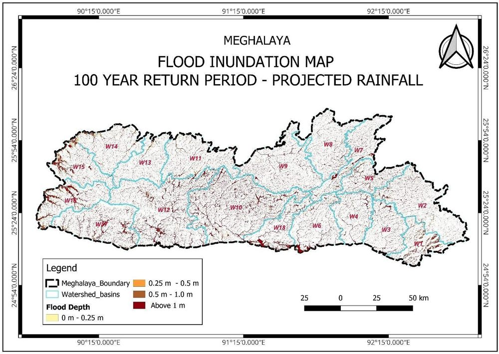
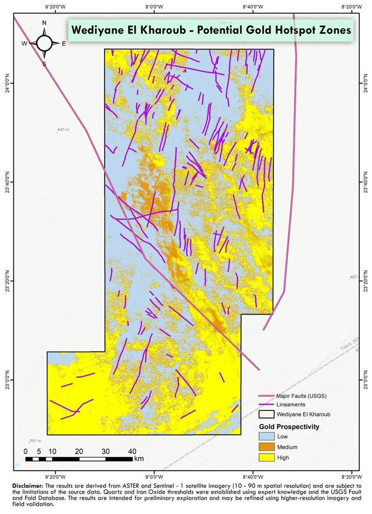
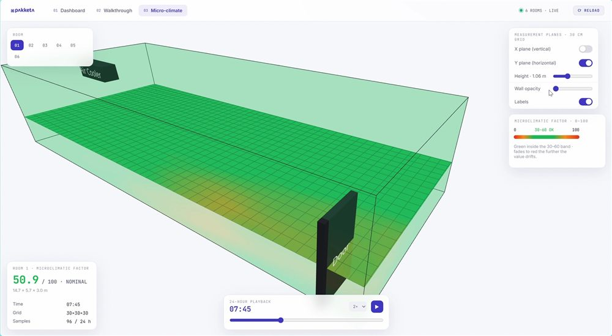
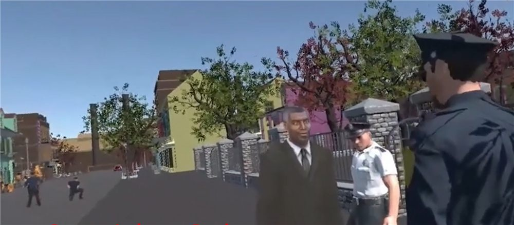
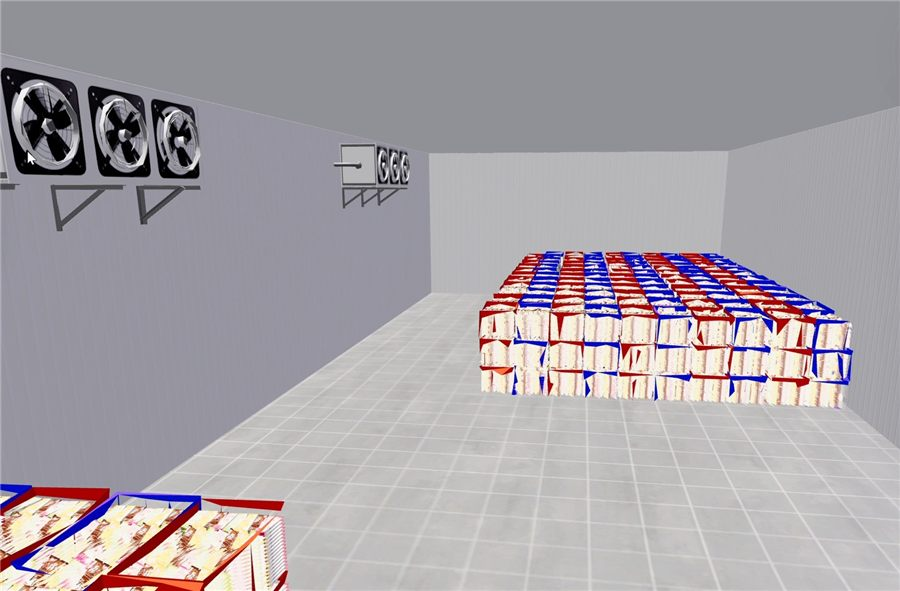
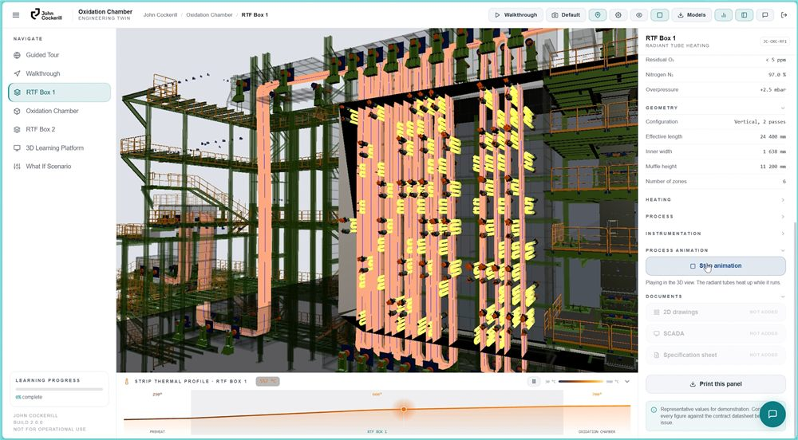
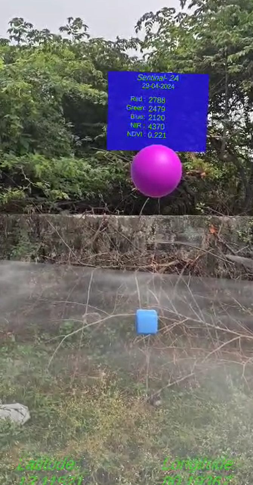
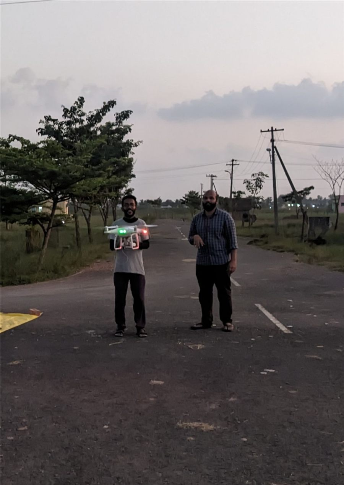
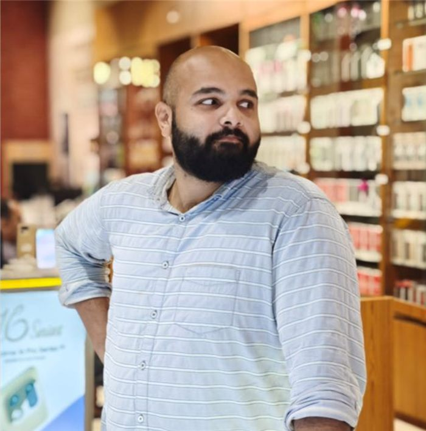
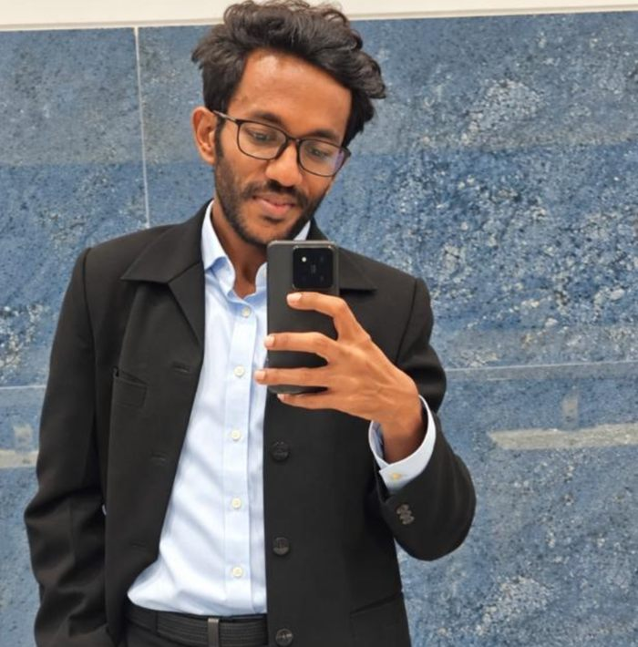

Geospatial intelligence and immersive experiences: GIS and remote sensing first, then AR, VR and digital twins that people can walk through and decide with.
Geospatial analysis first, then immersive XR, navigation and learning. Hover a row to preview it.

18 watersheds, 6 scenarios, 108 model runs.

ASTER and Sentinel-1 SAR, Mauritania.

3D walkthrough and microclimate view.

A 10-minute immersive film.
| No. | Project | Context | Discipline | Year |
|---|---|---|---|---|
| 01 | Meghalaya flood modelling | Meghalaya, India | GIS & geospatial | 2025–26 |
| 02 | Satellite-based mineral prospectivity | Mauritania | GIS & geospatial | 2026 |
| 03 | Pan-India toll and road analyticsONGOING | National-scale project | GIS & geospatial | 2026 |
| 04 | Chennai flood drone survey | Chennai, India | GIS & geospatial | 2024 |
| 05 | Road accident analysis | Confidential engagement | GIS & geospatial | 2025 |
| 06 | Bengaluru campus indoor navigation | Bengaluru, India | XR / AR / VR | 2025 |
| 07 | Chennai Central navigation and Anna Nagar AR utilitiesONGOING | Chennai, India | XR / AR / VR | 2026 |
| 08 | Confidential indoor navigation | Confidential engagement | XR / AR / VR | 2026 |
| 09 | Rondo VR | Historical VR film | XR / AR / VR | 2025 |
| 10 | Monkey King animation tutorials | Animation tutorial series | XR / AR / VR | 2025 |
| 11 | Cartographic Practical Techniques | SWAYAM MOOC | Learning & research | 2025–26 |
| 12 | Academic workshops | Engineering colleges & universities | Learning & research | — |
| 13 | University course-content development | Dr Ambedkar Open University | Learning & research | — |
A geospatial foundation with an immersive perspective: GIS and remote sensing, XR / AR / VR, digital twins, and research.
Mapping and spatial decision support for transport networks, infrastructure and the environment.
Navigation, storytelling and spatial interfaces built around real places.
Interactive 3D replicas of real places and assets, linked to spatial data so people can explore, inspect and test what-ifs.
Practical workshops, academic content and research-led prototypes.
Watersheds, terrain and modelled flood scenarios.
Road networks, toll-plaza analytics and spatial information.
Indoor navigation, AR records and wayfinding.
Satellite-image analysis and preliminary prospectivity.
Immersive narratives, academic content and workshops.
New spatial tools and methods explored through practical experiments.
Interactive 3D replicas of real places and assets, linked to spatial data so people can explore, inspect and test scenarios before they commit.


From drone fieldwork and immersive storytelling to navigation, environmental modelling and geospatial research. Ongoing labels reflect October 2026.
Application 202341073610: system and method for creating and editing three-dimensional spatial vector data in a virtual reality environment.
Application 202341084018: system and method for measurements on a 3D real-world reconstructed model in an immersive VR environment.
Drone surveying during the Chennai floods.
CARTOXR Research Centre and Consultancy LLP begins in Chennai.
A ten-minute immersive film exploring the history of Rondo in Saint Paul.
Fifteen classes, study material, transcripts, academic scripts, video editing and stakeholder coordination.
Android and iOS indoor-navigation applications for the Bengaluru campus.
Statewide flood modelling across eighteen watersheds.
Spatial road-accident analysis for a confidential client.
Unreal Engine animation tutorial series and short-film work.
Indoor-navigation work with client and site details kept confidential.
Remote sensing and preliminary gold-prospectivity analysis in Mauritania.
Toll-plaza, logistics and road-network analysis for a central government project.
Separate workstreams for Chennai Central navigation and Anna Nagar AR underground-utility visualisation.
Prototypes, publications and patent applications that grow out of practical geospatial and XR work.
Immersive interaction with 3D models of real places. Mark locations, draw shapes and take measurements.

View satellite imagery, spectral bands and NDVI on real-world surfaces.
A research prototype for immersive 3D brain models and remote collaboration.
An AR indoor-navigation prototype for a multi-level public-transport environment.
Research prototypes. Deployment, ownership and measured outcomes are not established.
Subramaniyam, Shylesh, Ramasamy, Kumar. ISPRS Annals, X-4-2024, 333–340. DOI ↗
D’Silva, Subramaniyam, Raskar-Phule. Smart Buildings and Cities with Remote Sensing and GIS, CRC Press.
Raskar-Phule, Subramaniyam. GNSS Applications in Earth and Space Observations, CRC Press.
Subramaniyam, Sk. Disaster Risk, Resilient Agriculture and Livelihood, Routledge India.
Subramaniyam, Raskar-Phule. Journal of Civil Engineering Inter Disciplinaries, 2(2), 7–17.
CARTOXR Research Centre and Consultancy LLP is a Chennai-based startup integrating geospatial technology and extended reality through research, prototypes and practical project work.
We aim to enhance how people interact with and understand the world through spatial technologies. Our focus is on the connection between real places, the data that describes them and the way people experience that information.
Our work spans GIS and remote sensing, drone surveying and photogrammetry, flood and transport analysis, AR/VR storytelling, indoor navigation and digital twins.


CPU
GPUXR development, geospatial systems and interactive applications.
subramaniyam13@gmail.comFifteen classes with study materials, transcripts and academic scripts, plus video editing and coordination across faculty and editors.
Delivered at IIST Thiruvananthapuram, Sardar Patel College of Engineering Mumbai, CUTN Thiruvarur and Bharati Vidyapeeth Pune.
Course-content development for the M.Sc. Geography and Diploma in Geoinformatics programmes.
Start with a place, a question or an idea. Share what information is available and what the project should help people understand or do.